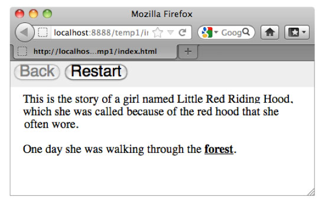

Running and Exporting
Clicking the Run button in the main window or choosing the Run menu item in the Control menu lets you test your story in your default browser.

If you want to share your story online, use the Export for web menu item in the File menu. This creates a folder containing the exported story and related scripts. Copy the entire exported folder if you want to distribute your story. Open the file index.html in a web browser to read the story. If you want to share your story online, upload the entire folder, and link to index.html. Note that HypeDyn stories have been tested in recent versions of Firefox and Safari, and in Internet Explorer 10.
The Export as text menu item under the File menu creates a text file containing the contents of all the nodes in the story.